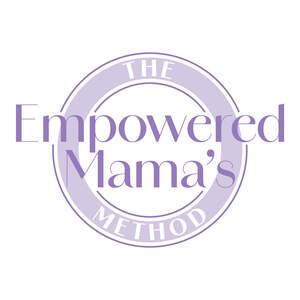

Trade Mark Journal No.2025/052 26 December 2025
UK00004282676 23 October 2025 (9,16,41,44)

- Class 9
- Downloadable electronic publications, e-books, digital manuals and workbooks relating to pregnancy, childbirth, postpartum recovery, women’s health and holistic wellbeing; downloadable audio files, podcasts, guided meditations and video recordings featuring educational and therapeutic content in the fields of nervous-system regulation, movement, mindset and maternal health; downloadable computer software and mobile applications providing digital courses, training and information for women’s health and wellbeing; downloadable PDFs and printed publications providing educational and therapeutic information in the field of holistic women’s health.
- Class 16
- Printed matter, books, manuals, journals, workbooks, brochures, leaflets, posters and printed educational materials relating to women’s health, pregnancy, childbirth, postpartum recovery and wellbeing; printed guides and worksheets featuring information, exercises and affirmations for nervous-system regulation, movement and mindset.
- Class 41
- Educational and training services relating to pregnancy, childbirth, postpartum recovery and women’s health; provision of online and in-person workshops, seminars and courses; coaching in the fields of nervous-system regulation, holistic wellbeing, movement and mindset; publication of books, manuals, and digital educational materials, including videos and audio recordings.
- Class 44
- Health-care, medical, osteopathic and wellness services; advisory, consultancy and information services relating to women’s health, pregnancy, childbirth and postpartum recovery; provision of therapeutic treatments combining education, breathwork, manual therapy and movement; pregnancy and postnatal massage; physical rehabilitation, pain-management and holistic therapy services; consultancy in the field of nervous-system regulation, stress reduction and maternal wellbeing; provision of online and in-person information in the fields of physical, emotional and mental health.
Antonia Julia Ruth May